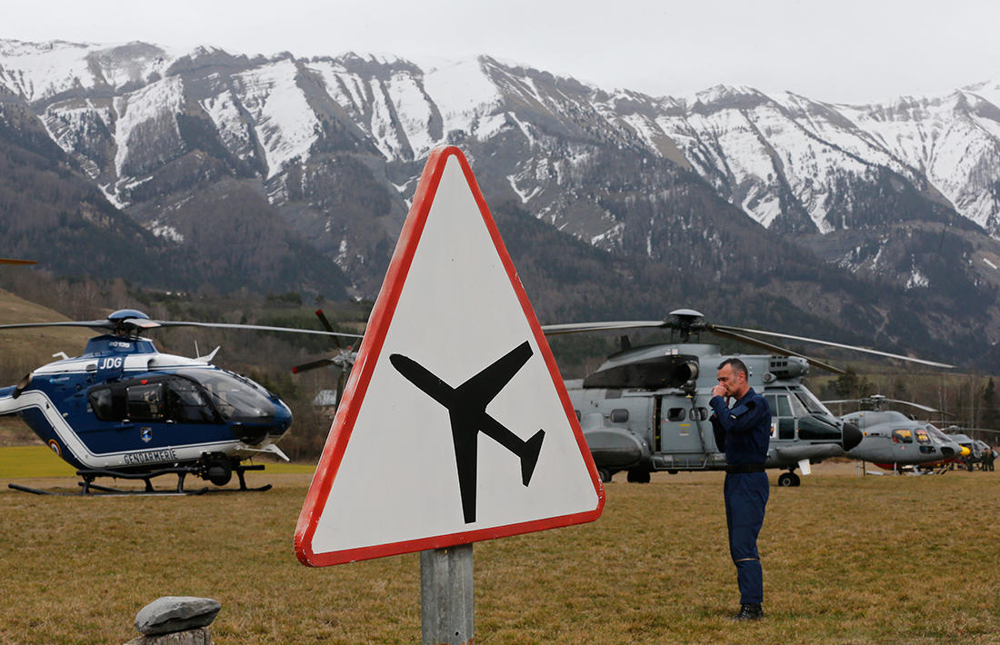

Утром 24 марта в предгорье французских Альп разбился пассажирский самолет Airbus A320 авиакомпании Germanwings. На борту летевшего из Барселоны в Дюссельдорф лайнера находились 150 человек; все они погибли. Поскольку лайнер разбился в труднодоступном райне гор, то добраться до места крушения можно только на вертолетах. «Медуза» показывает, как проходит поисковая операция в Альпах.

Вертолеты службы спасения
Фото: Jean-Paul Pelissier / Reuters / Scanpix

Службы спасения
Фото: Jean-Paul Pelissier / Reuters / Scanpix

Место падения самолета на карте
Фото: Boris Horvat / AFP / Scanpix
15 комментариев
sgorobin Час назад
SerNik 01.06.2015 10:00
sgorobin Час назад
SerNik 01.06.2015 10:00
SerNik 01.06.2015 10:00
Последние обсуждения